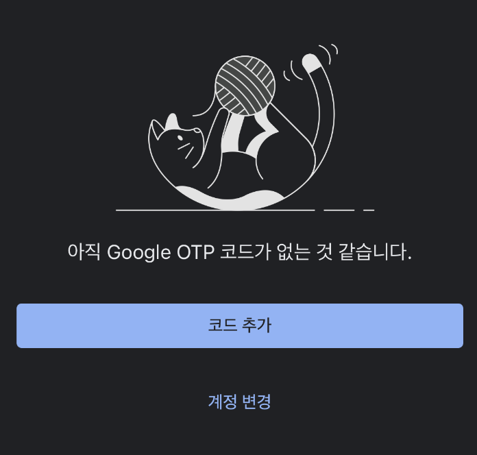

개요
OTP는 One Time Password의 약자로, 일회용 비밀번호를 뜻합니다. 고정된 비밀번호와 달리, 필요 할 때마다 발급되어 한 번만 사용할 수 있습니다. 대부분의 경우, 6자리 숫자가 30초마다 갱신되는 형태로, 휴대폰 어플리케이션이나 실물 OTP 생성기 등으로 발급합니다.
차라투에서는 여러 개의 RStudio Server를 구동하고 있습니다. 이 중 인턴십을 위해 사용하는 서버에 시범적으로 도입 해 보고자 하였고, 후기를 남깁니다.
본 게시글은 R-bloggers 게시글을 참고해 작성되었습니다.
과정 - 서버 1
OTP 도입을 위해서는 서버와 사용자의 설정이 필요합니다. 이 문단에서는 우선 서버측의 작업에 대해 다루겠습니다.
apt-get update명령어를 통해 패키지를 최신화합니다. 그 후,
apt-get install -y libpam-google-authenticator로 libpam-google-authenticator 패키지를 설치합니다.
과정 - 사용자
다음으로, 사용자 측에서 수행할 작업입니다.
- 첫째로, 우선 RStudio Server에 로그인합니다.

- 둘째로, Terminal에서,
google-authenticator를 실행합니다.

- 셋째로,
y를 입력합니다.

- 넷째로, 아래와 같은 QR코드와 secret key가 나타납니다.

휴대폰의 “Google Authenticator”나, 또는 이와 유사한 OTP 지원 어플리케이션으로, 화면에 제시된 QR코드를 입력(촬영)하거나, 아래의 secret key를 OTP 어플리케이션에 등록합니다.
 
- 중요한 작업은 거의 끝났습니다. 간단한 설정을 수행합니다.
- 관련 사항을 저장하는 옵션입니다.
y로 설정합니다.

- 하나의 코드로 한 번만 로그인을 허용할지 결정하는 옵션입니다.
y로 설정합니다.

- 기본적으로 현재의 코드, 이전 코드, 이후 코드의 3개의 코드로만 로그인이 허용됩니다. 이 옵션을 허용하면 현재의 코드, 앞 8개 코드, 뒤 8개 코드의 총 17개로 로그인이 가능하게 허용됩니다. 사용자와 서버의 시간 문제가 발생하면
y로 설정하면 되나, 현재는 필요 없어n으로 설정했습니다.

- 30초에 3번만 로그인을 시도할 수 있도록 하는 옵션입니다.
y로 설정합니다.

과정 - 서버 2
위 과정을 다 수행한 후, RStudio의 인증 프로파일을 수정하기 위하여 아래와 같이 서버 설정을 진행합니다.
vi /etc/pam.d/rstudio 파일에,
auth required pam_google_authenticator.so
@include common-account
@include common-session위 내용을 추가합니다.
vi /etc/rstudio/rserver.conf 파일에,
# Server Configuration File
auth-pam-require-password-prompt=0위 내용을 추가합니다.
이렇게 설정한 후, RStudio Server 서비스를 재시작합니다.
우리 회사는 Docker Container 내에서 RStudio Server를 실행하고 있으므로, 아래와 같이 Docker Container를 재시작 하였습니다. 만약 다른 방법으로 사용하고 계신 경우, 적절한 방법으로 서비스를 재시작하시면 됩니다.
# 컨테이너명: internship
docker restart internship이제, 휴대폰 OTP에 표시된 6자리 숫자로 로그인이 가능합니다.
마치며
기존에는 정적인 비밀번호를 사용하고 있었지만, OTP를 통해 비밀번호를 계속 변경하는 효과를 누릴 수 있습니다. 우선 하나의 서버에만 적용하였지만, 사용성이 우수하다고 판명 될 경우 다른 서버에도 확대 적용 계획입니다.
RStudio Server를 사용하시는 분들께 도움이 되었으면 좋겠습니다.
Reuse
Citation
@online{lim2024,
author = {Lim, Changwoo},
title = {RStudio {Server에} {2FA(OTP)} {도입하기}},
date = {2024-01-05},
url = {https://blog.zarathu.com/posts/2024-01-05-RStudio-Server-2FA/},
langid = {en}
}